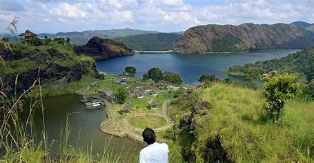
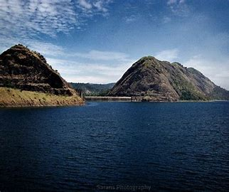
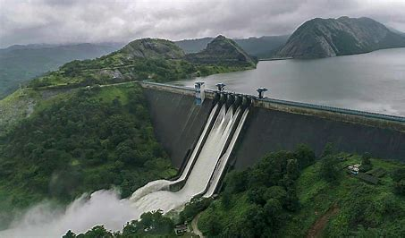

Idukki is one of the 14 districts of Kerala state, India, created on 26 January 1972. This beautiful High range district of Kerala is geographically known for its Mountainous Hills and Dense Forests. For the people of Kerala, Idukki is always associated with Power Generation. About 66% of the State’s Power needs come from the Hydroelectric Power Projects in idukki>
  